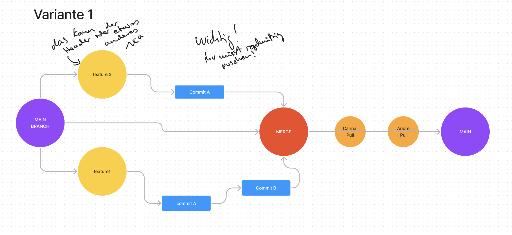
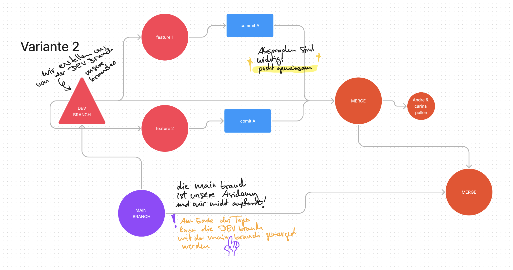

Collaboration starten
- Neues Repo erstellen
- ➡︎ Settings
- ➡︎ Collaborators
- Team einladen
Arbeitsablauf:
Variante 1
Variante 2: mit dev branch
Branch erstellen (Verzweigung von main branch)
im Terminal:
- git branch melina (name der branch wird angelegt)
- git checkout melina (wechselt in die branch)
- git checkout -b melina (⬆ beide schritte zusammen)
- git checkout main (wechselt zur main branch)
- git branch -d melina (branch löschen)
- ❗️ git branch -D melina (branch wird unabhängig vom Status und ohne Warnung gelöscht)
- git branch (zeigt alle vorhandenen branches an)
Branch verwalten
im Terminal:
- git push origin melina (Änderungen in eigener branch pushen)
- git pull origin main (Änderungen aus main branch in eigene branch pullen)
- ℹ️ branch in der man sich befindet und ob es Änderungen zum pushen/spanullen gibt, wird in VS code in der Leiste unten links angezeigt
- git checkout -b newbranch (branch erstellen und wechseln; ❗️ Änderungen aus vorheriger branch gehen verloren, wenn man sie nicht vorher pusht)
Commits anzeigen
im Terminal:
- git log --all alle commits anzeigen
- git log --oneline alle commits in einer line anzeigen
- git log --graph grafische Verzweigung der commits anzeigen
- git log --all --oneline --graph ↳ alles zusammen
- q zurück zur vorherigen Ansicht
Merge
im Terminal:
- git checkout branch name in die branch navigieren die man mergen will (in der man gearbeitet hat)
- git merge main branch wird mit main branch gemerged
- git checkout main in main branch navigieren
- git branch -d branch name branch löschen, wenn sie nicht mehr benötigt wird
Zu früherem Commit zurück gehen
im Terminal:
- git log --oneline aufrufen um commits mit ID anzuzeigen
- git checkout 000000 in commit wechseln
- ↳ oder git checkout -b neuer branch name + 000000 commit in als neue branch öffnen und dorthin wechseln
- git add .
- git commit -m 'commit'
- git push origin neuer branch name